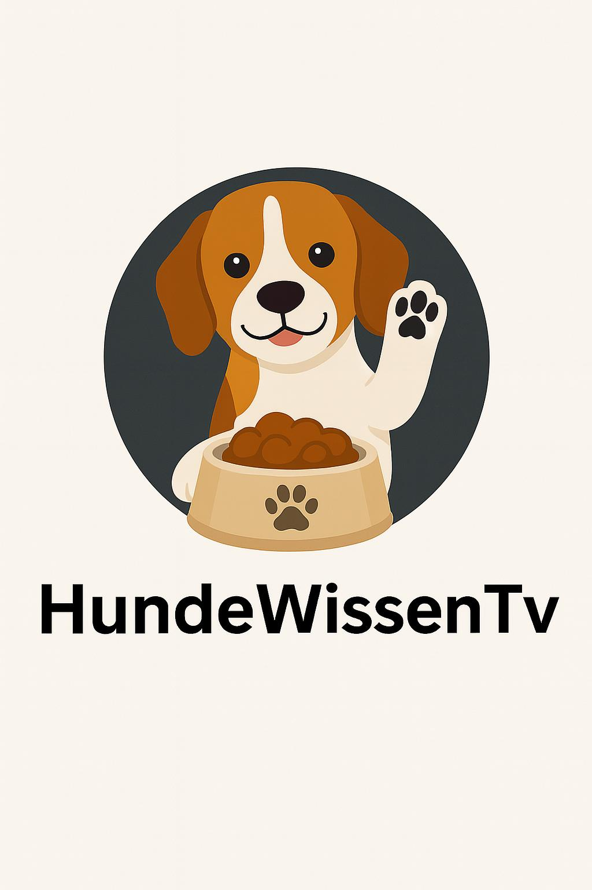
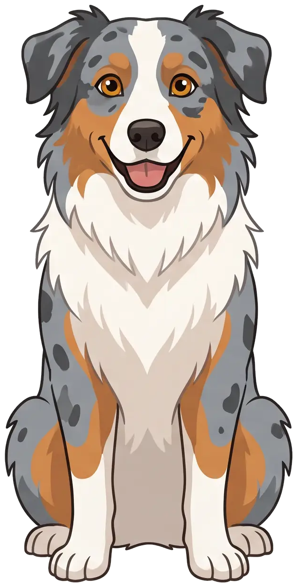

HundeWissenTvDein Hund riecht
100.000×
besser als du.

Riechzellen in der Nase

0 Mio.
Hund
0 Mio.
Mensch
60× mehr
Links und rechts
getrennt
getrennt
⬅ Duft von links
Gassi gehen =
Zeitung lesen
Zeitung lesen
Die Gassi-Zeitung
🐕 Bello war hier
🐈 Katze, vor 2 Std.
🍕 Pizza-Rest!

dein hund riecht bis zu 100.000-mal besser als du
seine nase hat rund 300 millionen riechzellen
deine nur etwa 5 millionen
jedes nasenloch riecht für sich
so weiß er, woher ein duft kommt
gassi ist für ihn wie zeitung lesen
+ Folgen für mehr